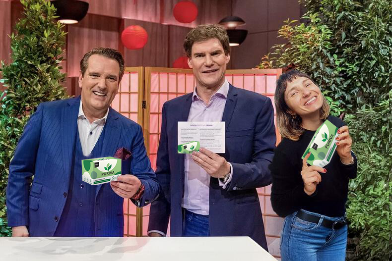

Der Wahnsinn s-Deal: jeder in der Jury von „Die Höhle“ unterstützt dieses Produkt!
Ein Bericht vo n Ella Schmitz |
( - Es war die beliebtes te Folge in der langen Geschichte von „Die Höhle“ – Janina Martin konnte mit ihrem einzigartigen Produkt die gesamte Jury überzeugen.)
N
och nie zuvor hat sich die gesamte Jury der „Höhle“ unabhängig voneinander dazu entschlossen M illionen von Euro in ein einziges Produkt zu investieren.
Nachdem die Jury unglaubli che 2 5% an Janina Martins Firma gekauft hatte , unterstützten sie Janina persönlich dabei, ein umfassendes Rebranding und ein neues Verpackungsdesign für ihr Wunderprodukt umzusetzen.
Janina hatte ein beeindruckendes Produkt entwickelt, allerdings Schwierigkeiten im Marketingbereich. Sie, die über Nacht berühmt wurde, hatte ein Studium in Ernährungswissenschaften sowie Sportmedizin abgeschlossen . Die Investoren erkannten schnell das Potenzial ihres Produkts und dass Janina nur Unterstützung bei der Vermarktung benötigte.
Ihr Produkt stellte Janina als den „größten Schritt in der Geschichte des Gewic htsabnehmens“ vor. Anfangs waren die Investo ren skeptisch, doch Janina konnte sie durch wissenschaftliche Studien von der Wirksamkeit ihres Produkts überzeugen.
Auch auf den sozialen Medien Instagram und Tiktok sind die Nixol beliebt. Tausende Videos gibt es dort bereits über das Produkt.
„Ich war geschockt. Eigentlich hatte ich nur damit gerec hnet, ein paar Tipps zur Vermarktung zu bekommen. Ich war mir nicht einmal sicher, ob ich überhaupt einen einzigen Investor für mein Produkt gewinnen könnte,“ sagte Janina in der Folge.
Nach ganzen fünf Angeboten der einzelnen Investoren brach sie in Tränen aus.
„Es fühlte sich nicht echt an. Vor mir saßen die erfolgreichsten Unternehmer Deutschlands, und diese wollten unbedingt Teil meines Projekts sein. Ich glaube, ich habe mein Produkt die ganze Zeit unterschätzt. Es war unglaublich und sehr emotional für mich!“ erklärte Janina.
Sie ist die erste Teilnehmerin in der langen Geschichte der Show, die Standing Ovations und Investitionen von allen Ju ry-Mitgliedern erhielt. Ihr Leben hat sich über Nacht schlagartig verändert.
Seit dem diese unglaubliche Folge aufgezeichnet wurde ist Janina hart am Arbeiten und nutzt die Tipps ihrer Investoren.
„Wir haben das Aussehen unseres Produkts komplett neu gestaltet und haben uns eine neue Verpackung überlegt.“ sagt Janina. "Wir sind gut im Labor und in der Produktentwicklung, aber wir haben keine Ahnung von Marketing. Deshalb bin ich heil froh, dass uns die Investoren so gut unterstützen."
„Das Produkt, welches wir in der Show gezeigt haben, w urde jetzt in Ni xol rebranded. Es ist die Original Formel – alles was wir geändert haben sind der Name und die Verpackung , sodass wir es besser ausserhalb von Europa vertreiben können.“ erklärt Janina. "Wir sind jetzt bereit in 2025 den Markt in den USA zu erobern. Auch die derzeitige Krise kann uns nicht aufhalten!"
Janina startete den Produktverkauf
durch ihre Firmen-Web site
und w ar innerhalb 5 Minuten ausverkauft.
„Wir haben sogar extra mehr Ware produziert als sonst. Ich habe quasi mein ganzes privates Geld in Ware gesteckt bevor ich in die Sendung bin. Wir haben ungefähr 10 mal so viel Prod uziert wie üblich. Es war wirklich anstrengend. Wir dachten, dass wir genug auf Lager hätten aber falsch! Wir haben tatsächlich alles innerhalb von 5 Minuten verkauft!“ freute sich Janina. "Es war einfach Wahnsinn!"
Während die „Höhle“-Juroren auf ihre clevere Investition anstoßen, schwärmen Frauen o nline von Nixol und sagen, dass die Resultate dieses Produktes ih r Leben verändert haben.
Klinische Versuche von Nixol haben beweisen können, dass Frauen die dieses Produkt nutzen ihren Fettanteil drastisch reduzieren konnten und das dies auch, bei weiterer Nutzung, so bleibt.
Trotz der guten Er fahrungen und vielen Verkäufe des Produkts standen die Löwen Janina skeptisch gegenüber. Doch nachdem sie die klinischen Studien mit über 1800 Teilnehmern vorstellte, wurde auch der letzte Löwe überzeugt.
Damit kon nte Janina die Investoren überzeugen
Janina Martin ihre ganze Energie dafür aufgebracht eine Formel zu entwickeln. Die klinischen Studien konnten mit ihrer Wirksamkeit jeden Investor überzeugen.Im Gegensatz zu vielen anderen P rodukten die bereits in der Sendung vorgestellt wurden hat Nixol mehrere Testreihen durchlaufen in denen folgende Punkte festgestellt wurden:
- die patentier ten Kapseln werden durch die spezielle Formel von der Magenschleimhaut sofort aufgenommen
- Nixol besteht aus speziellen Kapseln, die zeitverzögert die Wirkstoffe an den Körper abgeben. So kann mit Einnahme von nur einer Kapseln der Körper in einen 24-stündigen Fettverbrennungsmodus gesetzt werden
- das Präparat reguliert den Stoffwechsel des Körpers auf ein normales Ni veau
- reguliert den Blutzuckerspiegel auf ein optimales Level, sodass es dem Körper schwerer fällt Fett in Zellen einzulagern
- vermeidet Heisshunger, sodass die Kalorienzufuhr verring ert wird
Auch eine ganze Reihe Promis sind überzeugt

“Nixol ist unglaublich. Ich wurde gefragt ob ich diese Spezialkapseln ausprobieren möchte und habe direkt ja gesagt. Ich habe nach der Einnahme viel weniger Hunger und fühle mich super.“ - Maite Kelly
"Ich war Teilnehmerin bei der ersten Studie zu Nixol. Mein Arzt hat mich für die Testreihe angemeldet, da mein Übergewicht lebensbedrohlich war. Ich habe 44 Kilo in der Studie mit Nixol abgenommen. Ohne Sport und ohne Ernährung. Ich habe dadurch zwar schlaffe Haut am Bauch, weil ich so viel abgenommen habe, aber diese werde ich mir wegmachen lassen. Ich habe sehr gute Erfahrungen mit Nixol gemacht und hatte keine nennenswerten Nebenwirkungen." - A nja
„Ich habe einen sehr hektischen Zeitplan und dadurch nicht viel Zeit für Sport. Genau deshalb liebe ich Nixol! Nur ein paar Minuten am Morgen und am Abend reichen bei mir aus!“ - Son ya Kraus
Gib dir sel bst die Promi Behandlung
Die speziell en Nixol-Kapseln gibt es derz eit nur Online zu kaufen. Janina arbeitet gerade an einer Apothekenzulassung für Deutschland.
Das Produkt ist schwierig in der Herst ellung und die Nachfrage ist derzeit höher als die Produktion. "Es ist wichtig für uns keine Kompromisse bei der Qualitä t zu machen" , so Janina. "Aber durch die Löwen haben w ir unsere Produktionskapazitäten stark ausbauen können, sodass wir alle Kundinnen und Kunden sofort belie fern können . Das fühlt sich sehr großartig an und jeder ist zufrieden."
Nixol war seit der Ausstrahlung im Februar bereits 3 Mal ausverkauft. Als nächstes Ziel für 2025 hat sie sich mit den Löwen den amerikanischen Markt vor genommen.